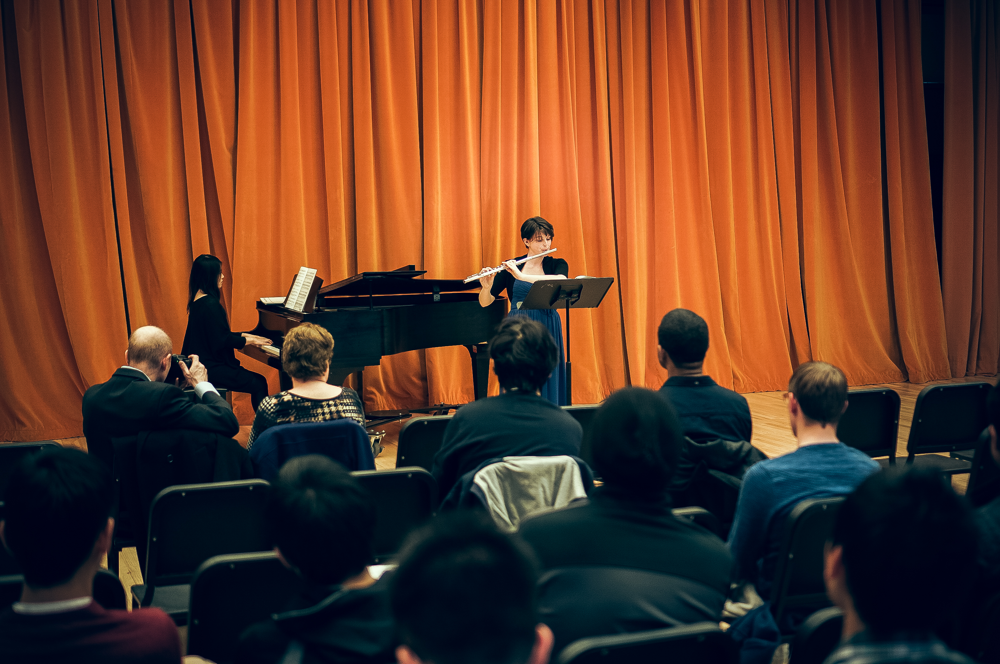

Es la hora de la interpretación, de disfrutar tras el duro trabajo.
Flute Recital

Es la hora de la interpretación, de disfrutar tras el duro trabajo.


Cada grupo interpretaremos las 4 partituras seguidas delante de nuestros compañeros, y a continuación imprimiremos y rellenaremos la plantilla grupal de autoevaluación para criticar nuestra interpretación.
En esta actividad vamos a interpretar en público las canciones que hemos trabajado y vamos a valorar nuestro trabajo.
En esta actividad será muy importante la Inhibición, ya no solo por estar centrado en nuestra melodía frente a la de nuestros compañeros, sino también, por el hecho de tocar ante un público. Para evitar inseguridades será necesario centrarnos en la música y no en factores externos.
Por supuesto trabajaremos la Atención dividida, porque tenemos que estar pendiente de lo que nosotros toquemos, escucharnos, y escuchar al resto de miembros del grupo para ir todos al mismo tempo.
La Atención sostenida, para mantener la atención durante todo el tiempo que dure la interpretación.
La Flexibilidad cognitiva, por si se da el caso de que nos equivocamos o nos paramos, buscaremos un punto para retomar la canción.
Trabajaremos la Metacognición porque debemos valorar el resultado de nuestra interpretación para poder valorarla después.
Y como siempre la Memoria de trabajo, puesto que vamos a interpretar la partitura que hemos trabajado, y la Memoria procedimental, debido a la habilidad que hemos adquirido con el tiempo para aprender a tocar la flauta.
En la autoevaluación grupal, trabajaremos la Metacognición para valorar nuestra interpretación, la Atención selectiva, para responder a las preguntas concretas que nos hace de cada canción y la Memoria de trabajo para recordar el resultado la interpretación.
Obra publicada con Licencia Creative Commons Reconocimiento Compartir igual 4.0